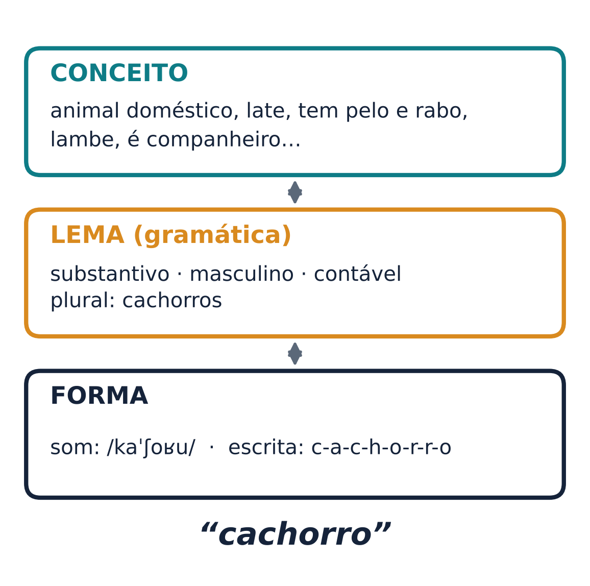
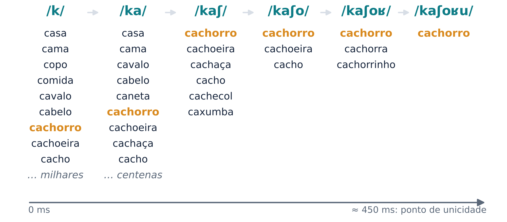
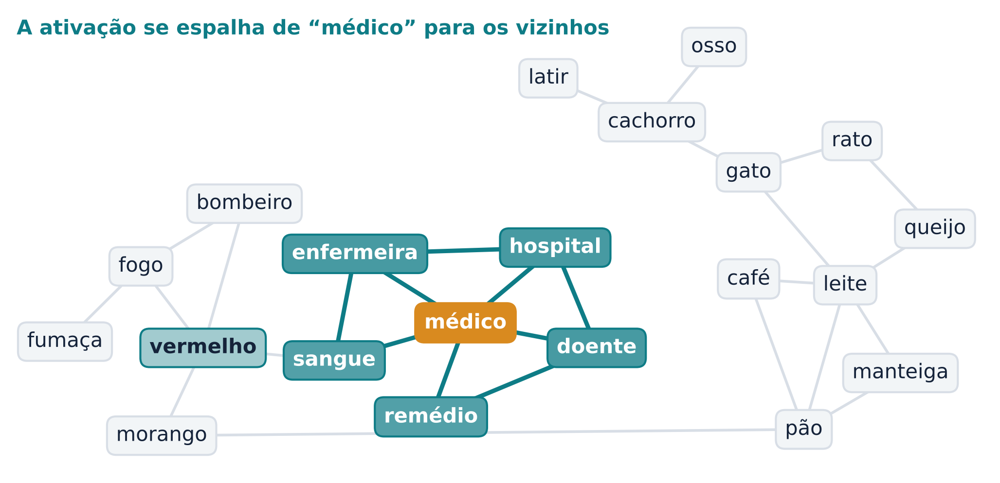
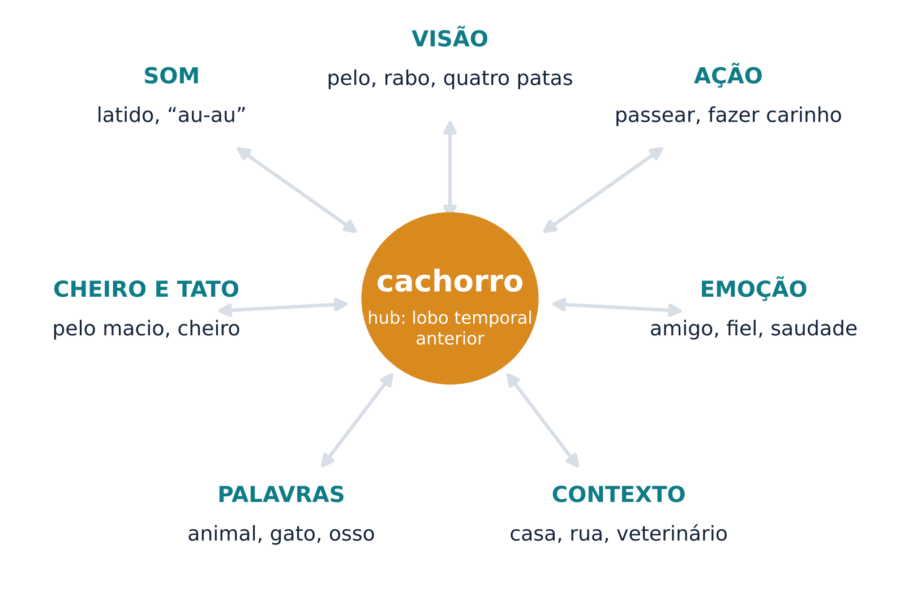
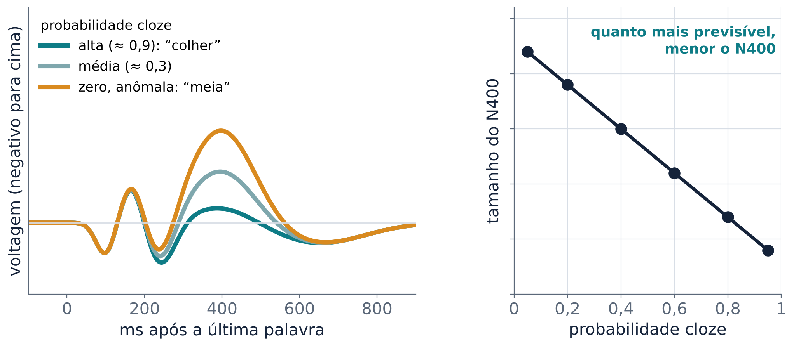
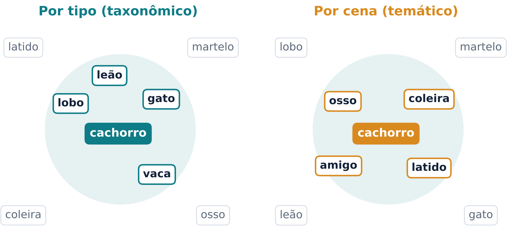

Como o cérebro encontra uma palavra em frações de segundo e onde guarda o que ela quer dizer
Quando você ouve “cachorro”, sabe na hora que é um animal que late, que é um substantivo masculino e que se escreve com “ch” e dois “r”. Esse conhecimento fica guardado na memória de longo prazo, num conjunto que os psicólogos chamam de léxico mental: uma espécie de dicionário interno.
Saber uma palavra envolve vários tipos de conhecimento: a sequência de sons, ligada ao significado, às propriedades gramaticais e à forma escrita (Davis, 2016). Uma maneira útil de organizar isso é dividir cada entrada do léxico em três níveis (Figura 1). O conceito é o que a palavra quer dizer. O lema reúne as propriedades gramaticais: classe (substantivo, verbo), gênero, como a palavra se combina com outras. A forma é a sequência de sons e, para quem lê, a sequência de letras. Na aula 4, no modelo de produção, o falante ia do conceito para a forma. Hoje fazemos o caminho da compreensão: da forma até o conceito.

Quantas entradas há nesse dicionário? Depende do que se conta. “Dirigir”, “dirigindo” e “motorista” são três palavras ou uma família? Para falantes nativos de inglês, as estimativas vão de 25 mil a 75 mil palavras, conforme o critério (Davis, 2016). O importante é a ordem de grandeza: um adulto conhece dezenas de milhares de palavras.
Isso cria um problema. Uma palavra na fala corrida dura menos de meio segundo, e nesse tempo o ouvinte precisa reconhecer uma entre milhares. Além disso, a fala não volta: diferente da leitura, não dá para “reler” um som que já passou (Davis, 2016). Para estudar como o cérebro resolve isso, vale separar três etapas:
Imagine ouvir “cachorro” som a som. Depois de /ka/, a palavra ainda pode ser “casa”, “cama”, “cavalo” ou “cachorro”. Depois de /kaʃ/, sobram “cachorro”, “cachoeira”, “cachaça”. Só perto do fim fica uma candidata. A teoria de coorte, de William Marslen-Wilson e Alan Welsh, descreve isso: o começo da palavra ativa um conjunto de candidatas com o mesmo início (a “coorte”), e as que deixam de combinar com os sons seguintes saem do conjunto até sobrar uma (Marslen-Wilson; Welsh, 1978; Pisoni; McLennan, 2016). O momento em que só resta uma candidata, e a palavra pode ser identificada, é chamado de ponto de unicidade (Hasson; Tremblay, 2016) (Figura 2).

Três detalhes deixam o quadro mais realista. Primeiro, as candidatas competem: palavras com muitas “vizinhas” de som parecido exigem mais trabalho para ser reconhecidas (Davis, 2016). Segundo, os modelos atuais, como o TRACE e o modelo de coorte distribuído, deixam que a ativação comece em qualquer ponto da fala, e não só no início da palavra; a versão original da coorte foi revista nesse ponto (Pisoni; McLennan, 2016). Terceiro, o contexto ajuda: no estudo original, a informação da frase interagia com a informação sonora desde cedo, e não só depois que a palavra terminava (Marslen-Wilson; Welsh, 1978).
No cérebro, o reconhecimento da forma sonora das palavras envolve os giros temporais superior e médio, com regiões mais anteriores integrando trechos mais longos da fala. O acesso ao significado recruta também regiões temporais inferiores, ao longo da via ventral que vimos na aula 3 (Davis, 2016).
Depois de encontrar a palavra, como chegamos ao significado? Uma ideia clássica é que os conceitos formam uma rede semântica. Cada conceito é um nó, e conceitos relacionados ficam ligados. Quando um nó é ativado, a ativação se espalha para os vizinhos, que ficam “preparados” e mais fáceis de acessar logo em seguida. É a teoria da propagação da ativação (Collins; Loftus, 1975) (Figura 3).

A previsão mais conhecida dessa ideia é o priming semântico. Na tarefa de decisão lexical, a pessoa vê sequências de letras e decide, o mais rápido possível, se são palavras. David Meyer e Roger Schvaneveldt mostraram duas sequências ao mesmo tempo na tela. A resposta “sim, as duas são palavras” foi mais rápida quando as palavras eram associadas (como pão e manteiga) do que quando não eram (Meyer; Schvaneveldt, 1971). Mais tarde, James Neely apresentou a primeira palavra (o prime) antes da segunda (o alvo) e variou o intervalo entre elas. Os resultados indicaram dois mecanismos: uma propagação da ativação rápida e automática, e um mecanismo lento, de atenção consciente, que entra em jogo quando a pessoa tem tempo de criar expectativas (Neely, 1977). O experimento 1 do laboratório usa um intervalo curto justamente para medir a parte rápida.
O priming mostra que o léxico não é uma lista em ordem alfabética. É uma rede em que acessar uma palavra “aquece” as vizinhas. Por isso “enfermeira” é reconhecida mais depressa logo depois de “médico”.
Há outra maneira de medir a proximidade entre palavras. O linguista J. R. Firth resumiu a ideia numa frase famosa: você conhecerá uma palavra pela companhia que ela mantém (Zuidema; Le, 2019). Se você lê “tomei uma taça de ___ com o queijo” e “esse ___ tinto é de uva malbec”, consegue adivinhar o que a palavra que falta quer dizer.
Essa é a base da semântica distribucional. Um computador conta, em grandes coleções de textos, com que frequência cada palavra aparece perto de outras. Cada palavra vira uma lista de números, um vetor, e palavras de uso parecido ficam próximas nesse espaço (Zuidema; Le, 2019). Na psicologia, o método mais conhecido é a Análise Semântica Latente (LSA); modelos mais recentes, baseados em redes neurais artificiais, preveem as palavras vizinhas em vez de só contá-las (Zuidema; Le, 2019). Na seção 7 veremos que esses vetores servem para prever a atividade do cérebro. Mas falta algo a um vetor feito só de texto: ele não sabe como é tocar num cachorro. A próxima seção pergunta se o cérebro usa esse tipo de experiência.
Se o significado de “chutar” incluir a experiência de chutar, ler “chutar” deveria ativar, ao menos um pouco, as áreas que controlam a perna. Olaf Hauk, Ingrid Johnsrude e Friedemann Pulvermüller testaram isso com ressonância magnética funcional (fMRI). Os participantes liam verbos ligados ao rosto (como lick, “lamber”), ao braço (pick, “pegar”) ou à perna (kick, “chutar”). Cada tipo de verbo ativou o córtex motor e pré-motor de forma somatotópica, isto é, seguindo o mapa do corpo: as regiões ativadas coincidiam com as que se ativam quando a pessoa move de fato o rosto, o braço ou a perna (Hauk; Johnsrude; Pulvermüller, 2004). É o mesmo córtex motor que, na aula 4, vimos controlar a articulação da fala.
Uma ativação na fMRI é uma correlação: mostra que a região trabalha durante a tarefa, não que seja necessária. Para testar uma relação de causa, o grupo usou estimulação magnética transcraniana (TMS), que aplica pulsos magnéticos breves sobre o crânio e altera por instantes a atividade da região embaixo. Pulsos sobre a área do braço e sobre a área da perna, no hemisfério esquerdo, afetaram de forma diferente a decisão lexical para palavras de braço e de perna (Pulvermüller et al., 2005): a estimulação de cada área facilitou as palavras do membro correspondente (Hauk, 2016).
Essa linha de pesquisa sustenta a ideia de semântica incorporada (ou ancorada): parte do significado das palavras fica nos mesmos sistemas que usamos para perceber e agir. O assunto, porém, está em debate. Para os críticos, os conceitos são, em algum nível, abstratos e simbólicos, e a informação sensorial e motora apenas os “instancia” durante o uso; a ativação motora poderia ser uma consequência do acesso ao significado, e não parte dele (Mahon; Caramazza, 2008). Uma revisão da área aponta que há estudos sem efeito, grande variação de estímulos e tarefas, e que a evidência mais direta, um prejuízo replicável numa tarefa de significado depois de perturbar o córtex motor (por TMS ou lesão), ainda não foi estabelecida. Por outro lado, há relatos de dificuldades com palavras de ação em pessoas com doença de Parkinson e com lesões por AVC (Hauk, 2016).
A posição de meio-termo, adotada pelo modelo da seção 5, é que o conhecimento sensorial e motor fica em regiões próximas às que processam essa informação no mundo real, mas isso não basta para explicar tudo o que sabemos sobre um conceito (Patterson; Lambon Ralph, 2016).
A neuropsicologia, o estudo de pessoas com lesões cerebrais, trouxe algumas das evidências mais surpreendentes sobre a organização do significado. Elizabeth Warrington e Tim Shallice estudaram quatro pacientes que tinham se recuperado parcialmente de uma encefalite por herpes simples. Os quatro identificavam objetos inanimados muito melhor do que seres vivos e alimentos, tanto vendo figuras quanto ouvindo palavras (Warrington; Shallice, 1984). Pouco depois, Warrington e Rosaleen McCarthy descreveram o padrão inverso: um paciente com muito mais dificuldade para objetos do que para alimentos e seres vivos (Warrington; McCarthy, 1987). Quando dois pacientes mostram déficits opostos, falamos em dupla dissociação, um sinal forte de que os dois tipos de conhecimento dependem, ao menos em parte, de recursos diferentes.
Como explicar esses casos? Há duas propostas principais.
O debate continua.
As seções 3 e 4 sugerem que o conhecimento sobre um conceito está espalhado pelo córtex. Mas falta algo. Um chihuahua e um são-bernardo são muito diferentes por fora e são o mesmo tipo de animal; uma baleia parece um peixe e não é. Para captar essas semelhanças “profundas”, parece necessário um lugar onde todas as modalidades se encontrem.
O modelo cubo e raios (hub-and-spoke), desenvolvido por Karalyn Patterson, Matthew Lambon Ralph e colegas, junta as duas ideias (Patterson; Nestor; Rogers, 2007). Várias regiões do córtex, cada uma ligada a uma modalidade, guardam a cor, a forma, o som, o movimento e o nome das coisas. Essas regiões se ligam, pelos raios, a um cubo (hub) transmodal, que representa a semelhança entre conceitos de um jeito que não depende de como eles aparecem, soam, se movem ou se chamam. Segundo o modelo, esse hub fica no lobo temporal anterior, nos dois hemisférios (Patterson; Lambon Ralph, 2016) (Figura 4).

A principal evidência a favor do hub vem da demência semântica, uma doença neurodegenerativa do espectro das demências frontotemporais, descrita em detalhe por John Hodges e colegas (Hodges et al., 1992). Nela, os lobos temporais anteriores atrofiam dos dois lados, em geral de forma assimétrica no início (Patterson; Lambon Ralph, 2016). O quadro tem características marcantes:
Se o significado estivesse guardado só nas regiões de cada modalidade, seria difícil explicar uma perda tão uniforme sem que essas regiões estivessem lesadas, e elas não estão (Patterson; Lambon Ralph, 2016). Pessoas saudáveis confirmam o quadro: quando a TMS perturba por instantes o lobo temporal anterior, a nomeação de figuras e a compreensão de palavras ficam mais lentas, mas outras tarefas igualmente difíceis, sem significado envolvido, não (Pobric; Jefferies; Lambon Ralph, 2007).
Por que essa região demorou a aparecer nos estudos de imagem? Porque a fMRI comum perde sinal no lobo temporal anterior, por causa de distorções do campo magnético perto dele. Estudos com tomografia por emissão de pósitrons (PET) e com fMRI corrigida para essas distorções mostram a região ativa em tarefas de significado (Patterson; Lambon Ralph, 2016).
O modelo cubo e raios concilia as duas visões. Os raios dão razão à semântica incorporada: parte do significado fica perto dos sentidos e da ação. O hub explica por que conseguimos generalizar além da aparência e por que a demência semântica apaga o conceito em todas as formas ao mesmo tempo.
Até aqui falamos de onde o significado está. A eletroencefalografia (EEG), que registra a atividade elétrica do cérebro no couro cabeludo com precisão de milissegundos, mostra quando ele é acessado.
Marta Kutas e Steven Hillyard pediram que pessoas lessem frases palavra por palavra. Algumas terminavam de forma sem sentido, como no exemplo clássico “ele passou manteiga no pão quente com meias”. A palavra sem sentido gerou uma onda negativa tardia, que eles chamaram de N400. Uma palavra fisicamente estranha (escrita em letras maiores) gerou outra onda, positiva (Kutas; Hillyard, 1980). A lição: o N400 não é uma reação a qualquer surpresa; ele é sensível ao significado. Nas figuras deste texto, o negativo está desenhado para cima, uma convenção comum em EEG; por isso o N400 aparece como um “morro”.
Quatro anos depois, os mesmos autores mostraram que o N400 não precisa de uma frase errada. Eles registraram o EEG para palavras que completavam frases com sentido. A amplitude do N400 diminuiu à medida que aumentava a probabilidade cloze da palavra, isto é, a proporção de pessoas que completariam a frase com ela. Além disso, palavras inesperadas, mas relacionadas à palavra mais esperada, geraram N400 menor (Kutas; Hillyard, 1984) (Figura 5). Em “tomou café com leite e açúcar”, “açúcar” é muito previsível e deve gerar um N400 pequeno; “biscoito” faz sentido, mas é menos previsível, e deve gerar um N400 maior.

O cérebro não aposta só numa palavra exata. Kara Federmeier e Marta Kutas compararam finais esperados, finais inesperados da mesma categoria do esperado e finais inesperados de outra categoria. Os finais inesperados que compartilhavam traços com o esperado geraram N400 menor (Federmeier; Kutas, 1999). Num exemplo nosso: se a frase pede “palmeiras”, a palavra “pinheiros” (outra árvore) deve custar menos que “tulipas”. O contexto pré-ativa traços de significado das palavras prováveis (Federmeier; Kutas; Dickson, 2016).
O N400 tem outras propriedades importantes (Federmeier; Kutas; Dickson, 2016; Kutas; Federmeier, 2011):
Antes disso, por volta de 150 ms, o cérebro já classificou o estímulo como “parece uma palavra”, “um rosto” ou “um objeto”. Federmeier, Kutas e Dickson (2016) resumem isso no título do capítulo: uma “progressão comum ao significado em cerca de um terço de segundo”.
Um debate. O N400 reflete o acesso ao significado guardado na memória, facilitado pelo que o contexto já pré-ativou, ou a integração do significado na frase? Lau, Phillips e Poeppel (2008) argumentam que o efeito se deve, ao menos em parte, a um acesso facilitado, e não só à integração. Federmeier, Kutas e Dickson (2016) também tratam o N400 como um marcador do acesso à memória semântica. Swaab, Brown e Hagoort (1997), por outro lado, interpretaram seus resultados como um déficit de integração, como veremos a seguir.
Como o N400 aparece mesmo quando a tarefa não pede nenhum julgamento, ele ajuda a medir compreensão em quem tem dificuldade para responder. Tamara Swaab, Colin Brown e Peter Hagoort registraram o N400 em pessoas com afasia (perda de linguagem depois de uma lesão cerebral) ouvindo frases com finais coerentes ou anômalos. Nos pacientes com problemas leves de compreensão, o efeito N400 era normal. Nos que tinham problemas moderados a graves, ele era menor e chegava mais tarde (Swaab; Brown; Hagoort, 1997).
Os vetores da seção 2 abriram uma nova forma de estudar o significado com fMRI. Em vez de comparar duas condições (animais contra ferramentas, por exemplo), os pesquisadores descrevem cada palavra por um vetor e treinam um modelo estatístico para prever a atividade cerebral a partir dele (Wehbe; Fyshe; Mitchell, 2019).
Tom Mitchell e colegas fizeram isso com 60 substantivos concretos. Cada substantivo foi descrito pela frequência com que aparecia, em textos, junto de 25 verbos (como “comer”, “empurrar”, “correr”). O modelo foi treinado com parte das palavras e testado nas que ficaram de fora: dadas duas imagens cerebrais e duas palavras novas, ele precisava dizer qual imagem era de qual palavra. Em nove participantes, acertou muito acima do acaso (Mitchell et al., 2008; Wehbe; Fyshe; Mitchell, 2019). Os pesos do modelo fazem sentido: a dimensão “comer” prevê atividade numa região do córtex gustativo, “empurrar” no giro pós-central e “correr” numa região temporal ligada à percepção do movimento biológico (Wehbe; Fyshe; Mitchell, 2019). O estudo junta as duas ideias da aula: estatística de textos e sistemas sensório-motores.
Alexander Huth e colegas foram além e usaram linguagem natural: os participantes ouviram horas de histórias narradas dentro do aparelho de fMRI. Cada palavra foi descrita por um vetor, e um modelo previu a resposta de cada pequeno ponto do córtex. O resultado é um atlas semântico: a maioria das áreas do sistema semântico tem preferência por certos domínios de significado (grupos de conceitos relacionados), e os mapas parecem consistentes entre as pessoas (Huth et al., 2016). Esses mapas se espalham pelos dois hemisférios. A semântica das palavras é um dos aspectos da linguagem com organização bilateral, enquanto a construção de estruturas gramaticais parece mais lateralizada à esquerda (Poeppel, 2019).
Uma ressalva importante: esses mapas mostram onde o significado é representado durante a escuta, não onde ele é necessário. Para isso, precisamos de lesões e de TMS, como nas seções 4 e 5.
Juntando tudo: o significado de “cachorro” não fica num ponto único. Ele é um padrão distribuído pelo córtex, com partes perto dos sentidos e da ação (os raios), um ponto de convergência no lobo temporal anterior (o hub) e um acesso que se desenrola em cerca de 400 ms, guiado pelo contexto (o N400).
Os cinco experimentos do laboratório transformam essas ideias em medidas no seu celular. Com poucas tentativas por pessoa, o resultado individual é ruidoso; o que importa é a tendência da turma.
Experimento 1 · Palavra ou não? Você leu uma palavra em minúsculas (o prime) e, cerca de um terço de segundo depois, decidiu se uma sequência em maiúsculas era uma palavra. A previsão é uma resposta mais rápida quando o alvo é relacionado ao prime (médico–ENFERMEIRA) do que quando vem depois de uma palavra neutra (Meyer; Schvaneveldt, 1971). Com um intervalo tão curto, o efeito deve refletir sobretudo a propagação automática da ativação (Neely, 1977). O efeito é pequeno: com só 10 tentativas por condição, algumas pessoas terão diferença negativa por acaso, mas a distribuição da turma deve ficar deslocada para valores positivos. No EEG, o priming aparece como um N400 menor para o alvo relacionado (Federmeier; Kutas; Dickson, 2016).
Experimento 2 · Stroop. Você tocou na cor da tinta e tentou ignorar o que a palavra dizia. Quando palavra e tinta discordam (VERDE escrito em vermelho), a resposta tende a ficar mais lenta e os erros aumentam. É o efeito descrito por Stroop (1935), um dos mais robustos da psicologia, com centenas de estudos (MacLeod, 1991). Ele mostra que, para um leitor fluente, o significado da palavra chega mesmo quando atrapalha. A explicação exata ainda é debatida: a revisão de MacLeod (1991) considerou insuficientes as versões mais simples da ideia de “leitura automática” e considerou mais promissoras as teorias em que a cor e a palavra são processadas em paralelo.
Experimento 3 · Animais contra ferramentas. Em 60 segundos por categoria, você tocou um botão a cada item lembrado. Repare na forma da curva e na ordem dos itens: eles costumam sair em grupos (animais da fazenda, depois do mar) com trocas de grupo no meio, e esses dois componentes explicam boa parte do desempenho (Troyer; Moscovitch; Winocur, 1997). A fluência por categoria é também um teste clínico: na demência semântica, com o vocabulário empobrecido, listar exemplos de uma categoria, como animais, fica difícil (Hodges et al., 1992). Cuidado com a interpretação da turma: se você lembrou mais animais do que ferramentas, isso pode refletir o tamanho e a estrutura das duas categorias, e não prova que existam sistemas cerebrais separados. A evidência forte de categorias separáveis vem das duplas dissociações em pacientes (seção 4).
Experimento 4 · Frases que surpreendem. A previsão é que finais inesperados mas aceitáveis (“café com leite e biscoito”) sejam julgados um pouco mais devagar do que finais esperados (“… e açúcar”), mesmo fazendo sentido. É uma versão comportamental do efeito da probabilidade cloze no N400 (Kutas; Hillyard, 1984). Atenção: as probabilidades cloze das frases do laboratório não foram medidas; são estimativas do professor.
Experimento 5 · Mapa do significado. Ao arrastar as palavras, você pode ter posto “cachorro” perto de “gato” e “lobo” (relação taxonômica, por traços em comum) ou perto de “osso”, “coleira” e “latido” (relação temática, por aparecerem juntos numa cena). As duas relações existem e há evidência de que dependem de sistemas parcialmente distintos (Mirman; Landrigan; Britt, 2017) (Figura 6). Num estudo com 86 pessoas com afasia depois de AVC, os erros de nomeação taxonômicos (dizer “pera” para uma maçã) se associaram a lesões no lobo temporal anterior esquerdo, e os temáticos (dizer “minhoca” para uma maçã) a lesões na junção temporoparietal (Schwartz et al., 2011). Não há resposta certa: o mapa é seu.

Uma colega diz que reconhecer uma palavra falada é como procurar num dicionário em ordem alfabética, depois de ouvir a palavra inteira. Com base na teoria de coorte, o que está errado nessa descrição?
Resposta
O reconhecimento começa já nos primeiros sons: eles ativam ao mesmo tempo todas as palavras compatíveis, e cada som novo elimina candidatas. A palavra pode ser reconhecida no ponto de unicidade, antes de terminar, e o contexto da frase interage com o som desde cedo. Não é uma busca em série depois do fim da palavra.
Por que o efeito de priming do experimento 1 pode ser negativo para um aluno e, mesmo assim, o resultado da turma confirmar o efeito?
Resposta
O efeito é pequeno e, com poucas tentativas por condição, o ruído individual (distração, um toque lento) pode ser maior que ele. Somando muitos alunos, o ruído tende a se cancelar e a distribuição da turma fica deslocada para valores positivos. Um efeito real e pequeno aparece na média, não necessariamente em cada pessoa.
A fMRI mostra que ler “chutar” ativa a área motora da perna. Por que isso, sozinho, não prova que o córtex motor faz parte do significado de “chutar”? Que tipo de dado ajudaria?
Resposta
A fMRI é correlacional: a ativação pode ser uma consequência do acesso ao significado, e não parte dele. Ajudariam dados causais, como TMS ou lesões motoras que prejudiquem de forma replicável a compreensão de verbos de ação. Até agora esses resultados são mistos, e o debate continua.
O paciente A perdeu muito mais o conhecimento de seres vivos do que de objetos; o paciente B, o contrário. O que esse par de casos permite concluir, e quais são as duas explicações em debate?
Resposta
É uma dupla dissociação: os dois tipos de conhecimento dependem, ao menos em parte, de recursos diferentes. A hipótese sensório-funcional diz que seres vivos dependem mais de traços perceptivos e objetos de traços de função e uso. A hipótese do domínio específico diz que a evolução selecionou sistemas para domínios como seres animados e inanimados.
Por que a demência semântica é considerada a principal evidência a favor de um hub no lobo temporal anterior?
Resposta
A atrofia se concentra no lobo temporal anterior, mas a perda atinge o conceito em todas as modalidades (palavra, figura, som, objeto) e em todas as categorias, sempre com o mesmo padrão (itens típicos e familiares resistem mais). Se o significado estivesse só nas regiões de cada modalidade, que estão preservadas, seria difícil explicar uma perda tão uniforme.
Em “Ela abriu a porta com a chave” e “Ela abriu a porta com a mão”, as duas frases fazem sentido. Qual final deve gerar o N400 maior, e por quê?
Resposta
“Mão”, porque é menos previsível que “chave” naquele contexto, isto é, tem probabilidade cloze menor. O N400 acompanha quanto o significado era esperado, e não apenas se a frase está errada.
O atlas de Huth e colegas mostra significado nos dois hemisférios. Isso contradiz a ideia de que a linguagem é lateralizada à esquerda? Que limite desse tipo de estudo é preciso lembrar?
Resposta
Não exatamente: mostra que a representação do significado das palavras é bilateral e extensa, enquanto outros aspectos, como a construção gramatical, continuam mais lateralizados. E a fMRI mostra onde o significado é representado, não onde ele é necessário; para isso são precisos estudos de lesão ou estimulação.
Responda em poucas linhas à pergunta da aula: o significado de “cachorro” fica guardado num único lugar do cérebro?
Resposta
Não. Partes do conhecimento ficam perto dos sistemas que as captam (forma visual, som do latido, ação de fazer carinho), como sugerem os verbos de ação e os déficits por categoria. Essas partes convergem num hub no lobo temporal anterior, cuja degeneração apaga o conceito em todas as formas. O acesso a esse padrão distribuído leva cerca de 400 ms e depende do contexto (N400).
CARAMAZZA, A.; SHELTON, J. R. Domain-specific knowledge systems in the brain: the animate-inanimate distinction. Journal of Cognitive Neuroscience, v. 10, n. 1, p. 1-34, 1998. DOI: https://doi.org/10.1162/089892998563752.
COLLINS, A. M.; LOFTUS, E. F. A spreading-activation theory of semantic processing. Psychological Review, v. 82, n. 6, p. 407-428, 1975. DOI: https://doi.org/10.1037/0033-295X.82.6.407.
DAVIS, M. H. The neurobiology of lexical access. In: HICKOK, G.; SMALL, S. L. (org.). Neurobiology of language. London: Academic Press, 2016. p. 541-555. DOI: https://doi.org/10.1016/B978-0-12-407794-2.00044-4.
FEDERMEIER, K. D.; KUTAS, M. A rose by any other name: long-term memory structure and sentence processing. Journal of Memory and Language, v. 41, n. 4, p. 469-495, 1999. DOI: https://doi.org/10.1006/jmla.1999.2660.
FEDERMEIER, K. D.; KUTAS, M.; DICKSON, D. S. A common neural progression to meaning in about a third of a second. In: HICKOK, G.; SMALL, S. L. (org.). Neurobiology of language. London: Academic Press, 2016. p. 557-567. DOI: https://doi.org/10.1016/B978-0-12-407794-2.00045-6.
HASSON, U.; TREMBLAY, P. Neurobiology of statistical information processing in the auditory domain. In: HICKOK, G.; SMALL, S. L. (org.). Neurobiology of language. London: Academic Press, 2016. p. 527-537. DOI: https://doi.org/10.1016/B978-0-12-407794-2.00043-2.
HAUK, O. What does it mean? A review of the neuroscientific evidence for embodied lexical semantics. In: HICKOK, G.; SMALL, S. L. (org.). Neurobiology of language. London: Academic Press, 2016. p. 777-788. DOI: https://doi.org/10.1016/B978-0-12-407794-2.00062-6.
HAUK, O.; JOHNSRUDE, I.; PULVERMÜLLER, F. Somatotopic representation of action words in human motor and premotor cortex. Neuron, v. 41, n. 2, p. 301-307, 2004. DOI: https://doi.org/10.1016/S0896-6273(03)00838-9.
HODGES, J. R. et al. Semantic dementia: progressive fluent aphasia with temporal lobe atrophy. Brain, v. 115, n. 6, p. 1783-1806, 1992. DOI: https://doi.org/10.1093/brain/115.6.1783.
HUTH, A. G. et al. Natural speech reveals the semantic maps that tile human cerebral cortex. Nature, v. 532, n. 7600, p. 453-458, 2016. DOI: https://doi.org/10.1038/nature17637.
KUTAS, M.; FEDERMEIER, K. D. Thirty years and counting: finding meaning in the N400 component of the event-related brain potential (ERP). Annual Review of Psychology, v. 62, p. 621-647, 2011. DOI: https://doi.org/10.1146/annurev.psych.093008.131123.
KUTAS, M.; HILLYARD, S. A. Reading senseless sentences: brain potentials reflect semantic incongruity. Science, v. 207, n. 4427, p. 203-205, 1980. DOI: https://doi.org/10.1126/science.7350657.
KUTAS, M.; HILLYARD, S. A. Brain potentials during reading reflect word expectancy and semantic association. Nature, v. 307, n. 5947, p. 161-163, 1984. DOI: https://doi.org/10.1038/307161a0.
LAU, E. F.; PHILLIPS, C.; POEPPEL, D. A cortical network for semantics: (de)constructing the N400. Nature Reviews Neuroscience, v. 9, n. 12, p. 920-933, 2008. DOI: https://doi.org/10.1038/nrn2532.
MacLEOD, C. M. Half a century of research on the Stroop effect: an integrative review. Psychological Bulletin, v. 109, n. 2, p. 163-203, 1991. DOI: https://doi.org/10.1037/0033-2909.109.2.163.
MAHON, B. Z.; CARAMAZZA, A. A critical look at the embodied cognition hypothesis and a new proposal for grounding conceptual content. Journal of Physiology-Paris, v. 102, n. 1-3, p. 59-70, 2008. DOI: https://doi.org/10.1016/j.jphysparis.2008.03.004.
MARSLEN-WILSON, W. D.; WELSH, A. Processing interactions and lexical access during word recognition in continuous speech. Cognitive Psychology, v. 10, n. 1, p. 29-63, 1978. DOI: https://doi.org/10.1016/0010-0285(78)90018-X.
MEYER, D. E.; SCHVANEVELDT, R. W. Facilitation in recognizing pairs of words: evidence of a dependence between retrieval operations. Journal of Experimental Psychology, v. 90, n. 2, p. 227-234, 1971. DOI: https://doi.org/10.1037/h0031564.
MIRMAN, D.; LANDRIGAN, J.-F.; BRITT, A. E. Taxonomic and thematic semantic systems. Psychological Bulletin, v. 143, n. 5, p. 499-520, 2017. DOI: https://doi.org/10.1037/bul0000092.
MITCHELL, T. M. et al. Predicting human brain activity associated with the meanings of nouns. Science, v. 320, n. 5880, p. 1191-1195, 2008. DOI: https://doi.org/10.1126/science.1152876.
NEELY, J. H. Semantic priming and retrieval from lexical memory: roles of inhibitionless spreading activation and limited-capacity attention. Journal of Experimental Psychology: General, v. 106, n. 3, p. 226-254, 1977. DOI: https://doi.org/10.1037/0096-3445.106.3.226.
PATTERSON, K.; LAMBON RALPH, M. A. The hub-and-spoke hypothesis of semantic memory. In: HICKOK, G.; SMALL, S. L. (org.). Neurobiology of language. London: Academic Press, 2016. p. 765-775. DOI: https://doi.org/10.1016/B978-0-12-407794-2.00061-4.
PATTERSON, K.; NESTOR, P. J.; ROGERS, T. T. Where do you know what you know? The representation of semantic knowledge in the human brain. Nature Reviews Neuroscience, v. 8, n. 12, p. 976-987, 2007. DOI: https://doi.org/10.1038/nrn2277.
PISONI, D. B.; McLENNAN, C. T. Spoken word recognition: historical roots, current theoretical issues, and some new directions. In: HICKOK, G.; SMALL, S. L. (org.). Neurobiology of language. London: Academic Press, 2016. p. 239-253. DOI: https://doi.org/10.1016/B978-0-12-407794-2.00020-1.
POBRIC, G.; JEFFERIES, E.; LAMBON RALPH, M. A. Anterior temporal lobes mediate semantic representation: mimicking semantic dementia by using rTMS in normal participants. Proceedings of the National Academy of Sciences, v. 104, n. 50, p. 20137-20141, 2007. DOI: https://doi.org/10.1073/pnas.0707383104.
POEPPEL, D. Key issues and future directions: where have we been and where are we going? In: HAGOORT, P. (org.). Human language: from genes and brains to behavior. Cambridge, MA: The MIT Press, 2019. p. 443-447.
PULVERMÜLLER, F. et al. Functional links between motor and language systems. European Journal of Neuroscience, v. 21, n. 3, p. 793-797, 2005. DOI: https://doi.org/10.1111/j.1460-9568.2005.03900.x.
SCHWARTZ, M. F. et al. Neuroanatomical dissociation for taxonomic and thematic knowledge in the human brain. Proceedings of the National Academy of Sciences, v. 108, n. 20, p. 8520-8524, 2011. DOI: https://doi.org/10.1073/pnas.1014935108.
STROOP, J. R. Studies of interference in serial verbal reactions. Journal of Experimental Psychology, v. 18, n. 6, p. 643-662, 1935. DOI: https://doi.org/10.1037/h0054651.
SWAAB, T.; BROWN, C.; HAGOORT, P. Spoken sentence comprehension in aphasia: event-related potential evidence for a lexical integration deficit. Journal of Cognitive Neuroscience, v. 9, n. 1, p. 39-66, 1997. DOI: https://doi.org/10.1162/jocn.1997.9.1.39.
TROYER, A. K.; MOSCOVITCH, M.; WINOCUR, G. Clustering and switching as two components of verbal fluency: evidence from younger and older healthy adults. Neuropsychology, v. 11, n. 1, p. 138-146, 1997. DOI: https://doi.org/10.1037/0894-4105.11.1.138.
WARRINGTON, E. K.; McCARTHY, R. A. Categories of knowledge. Brain, v. 110, n. 5, p. 1273-1296, 1987. DOI: https://doi.org/10.1093/brain/110.5.1273.
WARRINGTON, E. K.; SHALLICE, T. Category specific semantic impairments. Brain, v. 107, n. 3, p. 829-853, 1984. DOI: https://doi.org/10.1093/brain/107.3.829.
WEHBE, L.; FYSHE, A.; MITCHELL, T. M. Language processing in the brain: mapping neural activity to language meaning. In: HAGOORT, P. (org.). Human language: from genes and brains to behavior. Cambridge, MA: The MIT Press, 2019. p. 325-335.
ZUIDEMA, W.; LE, P. Vector-based and neural models of semantics. In: HAGOORT, P. (org.). Human language: from genes and brains to behavior. Cambridge, MA: The MIT Press, 2019. p. 313-324.
Material de estudo da disciplina Bases neurais da comunicação humana (UFRN), Prof. Daniel Y. Takahashi. Texto e figuras elaborados para o curso; as fontes estão nas Referências.